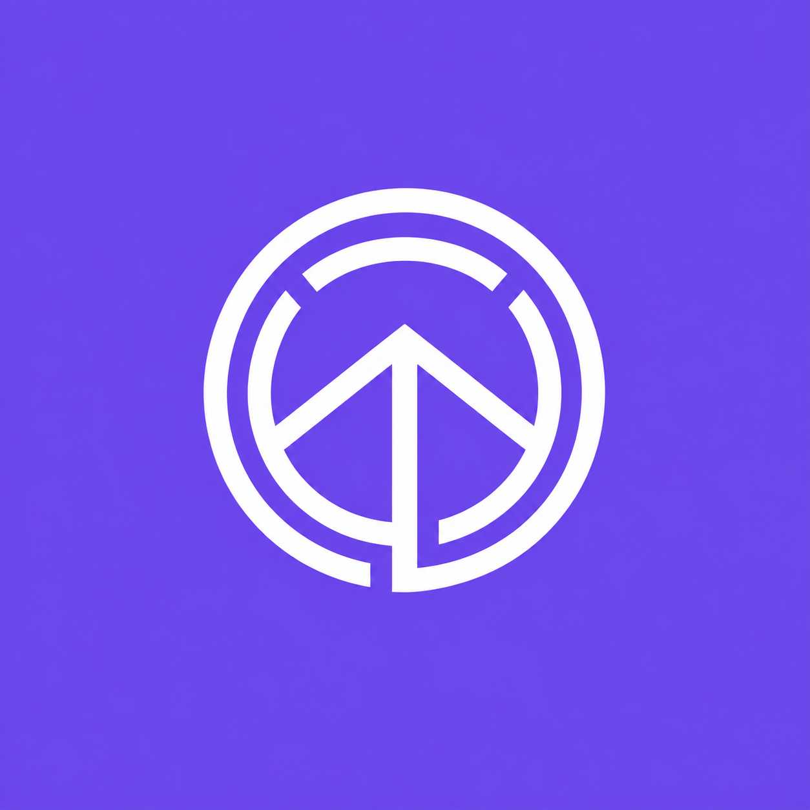
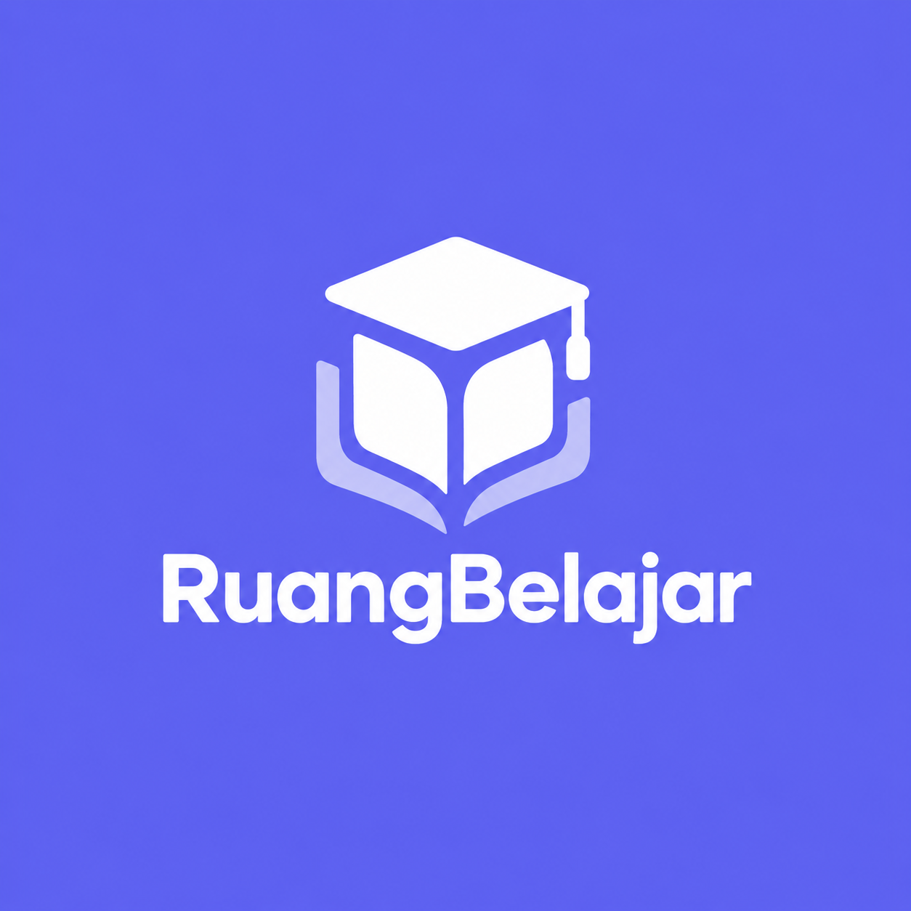
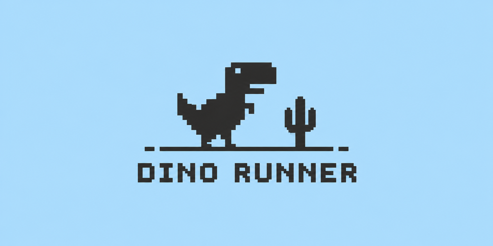

UI/UX DESIGN
Designing interfaces and experiences that are clear, intuitive, and centered around user needs.
I'm interested in designing user-friendly interfaces, building responsive web experiences, and solving technical problems through practical solutions.

Design, development, and technical problem solving work together as one ecosystem.
Designing interfaces and experiences that are clear, intuitive, and centered around user needs.
Turning interface concepts into responsive and functional web experiences.
Troubleshooting technical problems and finding practical solutions for users and systems.
I’m an Information Systems student with a strong interest in technology, particularly in UI/UX Design, Front-End Web Development, and Technical Support.
I’m interested in how design, technology, and problem-solving can come together to create useful and user-friendly digital solutions. From designing interfaces and user experiences, to building responsive websites and troubleshooting technical issues, I enjoy exploring different ways to turn ideas into practical solutions.
I’m continuously developing my skills and experience through academic work, personal projects, and hands-on experiences. For me, every project is an opportunity to learn, explore new ideas, and create better solutions.
Currently learning, building, and developing my skills through academic work, personal projects, and hands-on experience.
Creating interfaces that are clear, intuitive, and user-friendly.
Turning designs into responsive and functional web experiences.
Troubleshooting technical problems and finding practical solutions.
Supported daily IT operations by handling a wide range of technical needs and issues within the workplace. Responsible for the installation, configuration, maintenance, and troubleshooting of hardware, software, and operating systems, including Windows and Linux. Provided direct technical support to employees, helping ensure that IT equipment and infrastructure operated effectively to support daily business activities. Also performed computer and laptop assembly, maintenance, and repair, as well as identified and resolved internet connectivity and network device issues through systematic troubleshooting and problem-solving. This experience strengthened my troubleshooting and technical problem-solving skills, while providing practical knowledge of IT infrastructure and day-to-day IT operations.
Handled various laptop and PC service requests based on customer needs, including hardware and software troubleshooting, operating system installation, device maintenance, and component replacement or repair. Identified technical issues based on the condition of each device and the customer’s concerns, then provided suitable solutions to restore the devices to proper working condition. This experience helped strengthen my troubleshooting and technical problem-solving skills, as well as my ability to understand customer needs and handle devices directly.
Studying the intersection of technology and business processes, with a focus on system analysis, application development, databases, UI/UX, and the use of information technology to support organizational needs.
Studied the fundamentals of computers and networking, including hardware assembly and maintenance, operating system installation, network configuration, and hardware and software troubleshooting.
A collection of work across design, development, and technical problem solving.
Filmint is an application design project developed as part of the Advanced Information System Analyst and Design course. The project began with requirements analysis and system modeling using various diagrams, including Use Case Diagram, Activity Diagram, Sequence Diagram, Class Diagram, and other system models to define the applications requirements, processes, interactions, and structure. The analysis was then translated into UI/UX Design and an interactive prototype. The design focused on transforming system requirements and user flows into a structured, intuitive, and user-friendly interface. This project provided hands-on experience in integrating system analysis, system modeling, and UI/UX design, from the initial analysis phase through the development of an interactive prototype.
View Project ↗
Virtuplan is a UI/UX project designed as a time management and productivity application to help users organize their schedules, tasks, deadlines, and daily activities in a more structured way. The design process began with UX research, including problem definition, user personas, user stories, questionnaires, affinity diagrams, Point of View, and user journey mapping to better understand user needs and pain points. Based on the research findings, the solution incorporates features such as Smart Calendar, Deadline Alarm, Task Management, Notes, Reminders, and Analytime to help users manage their activities and monitor their productivity. The design process also covered information architecture, navigation flow, moodboarding, design system, wireframing, and prototyping, with a modern and playful visual approach.
View Project ↗
Electronic Service is a UI/UX design project focused on creating a website for electronic repair services and technical support. The project was developed based on a Software Requirements Specification (SRS), which served as a foundation for understanding the system requirements, features, and user needs. The design process began by analyzing the requirements and user flows, then translating them into a structured and user-friendly interface. The interface was designed in Figma, covering layout, user flow, and interaction design before being developed into an interactive prototype. This project provided hands-on experience in connecting requirements analysis with UI/UX design to create an intuitive, functional, and consistent user experience.
View Project ↗
Electronic Service is a Front-End Web Development project focused on transforming a UI/UX design into a responsive and functional website for electronic repair services and technical support. The website was developed using HTML, CSS, and JavaScript, with approximately 70% of the coding developed independently and 30% supported by AI as a development and troubleshooting aid. One of the main features is an input form integrated with a spreadsheet, allowing submitted user data to be recorded automatically and organized efficiently. This project provided hands-on experience in translating a Figma design into a functional website, building interactive features with JavaScript, and connecting the front-end with a data storage system to create a website that is not only visually polished but also practically usable.
View Project ↗
RuangBelajar is a Front-End Web project in the form of a Learning Management System (LMS) designed to support students' learning activities from elementary school to senior high school and vocational school. The platform provides learning features such as learning materials, subjects, assignments, schedules, and learning activity tracking in one integrated platform. The main focus of this project was to transform the interface design into a responsive, structured, and user-friendly website using HTML, CSS, and JavaScript. The project includes the development of layouts, navigation, UI components, learning pages, and various interactive elements. The use of Artificial Intelligence (AI) was permitted by the lecturer as part of the assignment to explore how AI can be utilized in the web development process. AI was used as a development assistant for tasks such as finding references, generating ideas, troubleshooting code, and accelerating the development process, while the implementation and development of the website remained part of the learning process.
View Project ↗
Dino Runner is a Front-End Web project featuring an endless runner game inspired by the Google Chrome Dino Game that appears when there is no internet connection. Players control a character and must jump over obstacles to achieve the highest possible score. The game focuses on simple yet interactive gameplay, featuring character movement, collision detection, a scoring system, and progressively increasing challenges. The project was developed using HTML, CSS, and JavaScript, with a focus on implementing game logic, animations, user interactions, and responsive design. The use of Artificial Intelligence (AI) was permitted by the lecturer as part of the assignment to explore how AI can be utilized in the development of websites and games. AI was used as a development assistant for finding references, exploring ideas, understanding and troubleshooting code, and accelerating the development process.
View Project ↗Interested in working together, discussing a project, or simply connecting?